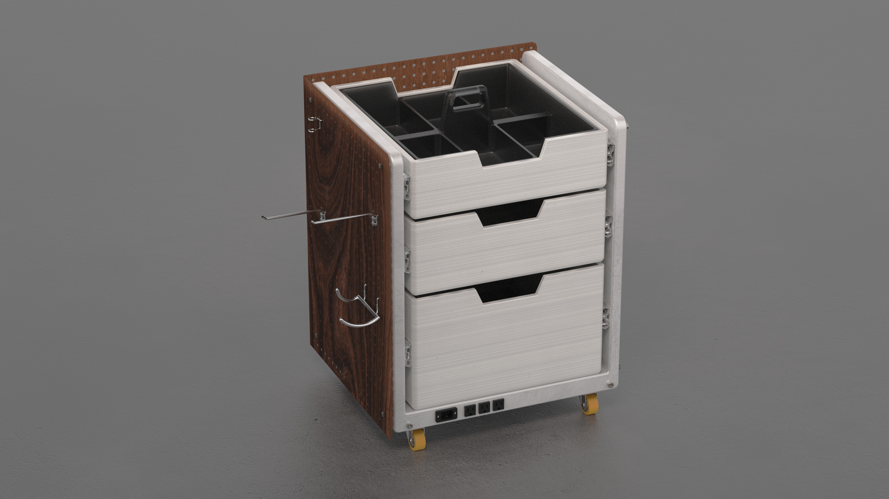

NOMAD DRAWER
Built to move, expose, and adapt. Workshop storage designed for craftsmen and tradeshow professionals.
The Problem
Workshop disorganization isn't accidental — it's systemic. Tools are scattered across surfaces with no intentional system. Static storage fails to keep up as work changes. Miscellaneous items accumulate without a clear place to go. For craftsmen and tradeshow vendors, the storage problem isn't just inconvenient — it costs time and money on the floor.
Three core pain points surfaced consistently: tools are hard to find because surfaces have no system; static storage can't reconfigure as needs evolve; and miscellaneous items end up in junk drawers with no home. The issue isn't lack of storage — it's lack of the right kind.
Visual Brand Language
The research board pulled from professional maker environments — fabrication studios, organized workshops, textile and production spaces. Consistent themes across references: organized visual density where tools are arranged intentionally, warm wood + metal material pairings, and tool visibility treated as a marker of craft identity rather than a failure of organization.
The key insight: visible tools signal craft competence. A pegboard is a display decision as much as a functional one. Any solution for this space needed to communicate expertise before a word was said.
Visible tools signal craft competence — a pegboard is a display decision as much as a functional one.
Design Criteria
The competitive matrix made the gap clear: the Secure + Flexible quadrant was unoccupied at craft and consumer scale. Tool chests lock well but hide everything. Pegboard walls expose tools but don't move. The only existing occupants of the target quadrant were large industrial rolling workshop benches — no equivalent existed in hardwood and metal at a tradeshow-viable scale.
That gap defined the brief: a mobile unit that exposes tools visibly, locks down during use, reconfigures without tools, and looks credible on a show floor.
Tools stored behind closed doors slow workflow and cost time on the floor
Visible tool access required — pegboard or open-face storage, no closed drawers
Craftsmen work across shop, job site, and show floor — storage must travel with them
Unit must roll freely and lock in place during active use
Work needs change as jobs evolve — fixed storage becomes a liability
Storage layout must reconfigure without tools or replacement parts
Job sites require only a subset of tools — carrying the full unit is impractical
A removable sub-organizer must carry independently to a job site
A power strip taped to the side signals improvisation, not craft
Outlets and USB charging must be structurally integrated, not added externally
Tradeshow context requires visual credibility on par with function
Hardwood + metal frame — reads craft-grade, not utilitarian shop equipment
Sketch Ideation
I explored a wide range of directions before committing to a form: pegboard walls, drawer and peg combinations, rolling workbenches, upward-casting organizers, sliding door enclosures. The early sketches pushed toward a unit that could anchor to a workspace but move freely, expose tools visibly rather than hiding them, and reconfigure without tools.
Two directions emerged as strongest: a fully enclosed rolling unit with removable drawer organizer on top, and a side-access drawer tower with pegboard panel sides. The pegboard-and-drawer hybrid became the clear direction — it was the only form that satisfied visible access and reconfigurability simultaneously.
The Nomad Drawer
The Nomad Drawer is a mobile workshop and tradeshow storage unit that rolls, locks, and adapts. Every feature traces back directly to a research finding or design requirement.
- Pegboard side panels with hook attachments — visible, flexible tool storage that reconfigures without tools
- Open-top removable organizer — a portable tray that lifts off the unit entirely for job-site carry
- Locking casters — rolls freely between spaces, locks secure during active use
- Integrated power strip — outlets and USB charging built into the base structure, not added externally
- Walnut wood + aluminum frame — material honesty that reads as professional and craft-grade in any context
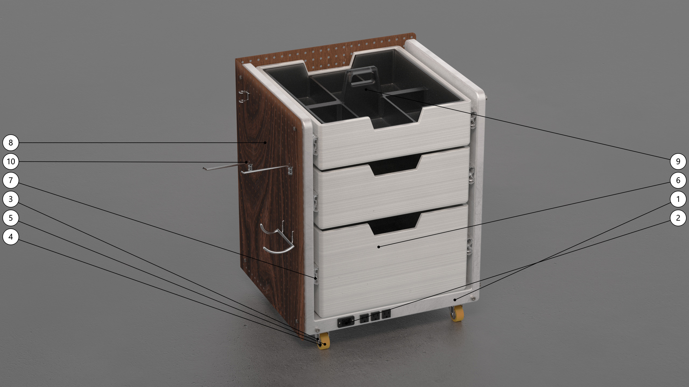
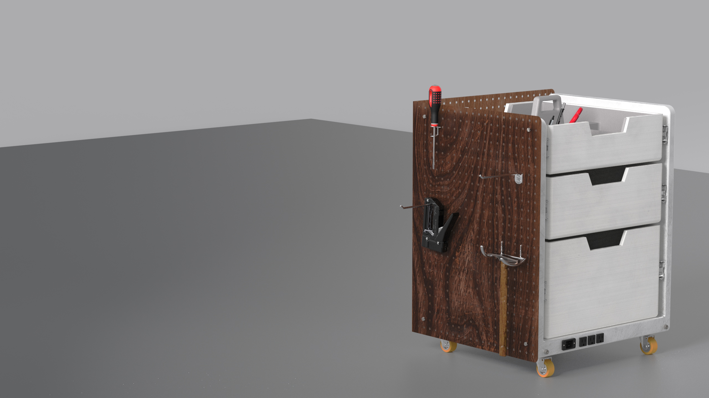
Pegboard in use — tools hung and visible, reconfigured without tools
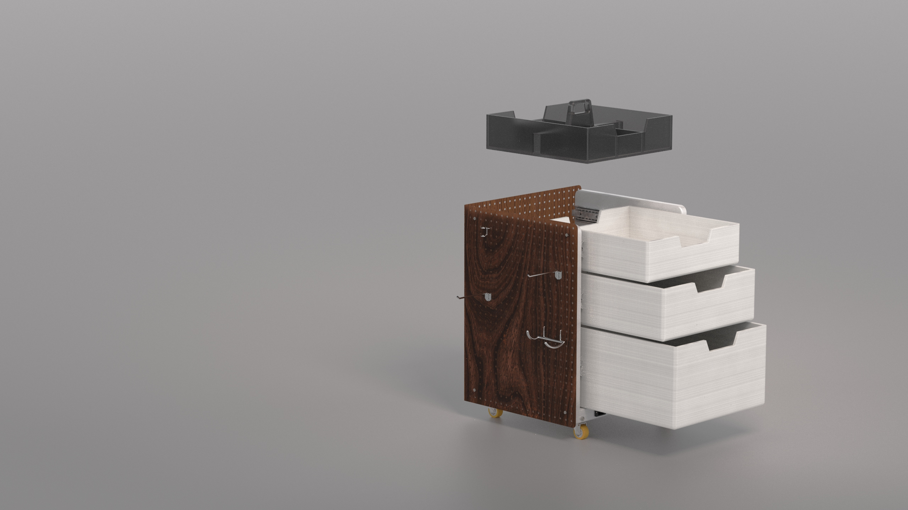
Removable organizer — lifts off independently for job-site carry
Adaptability in Detail
The removable organizer is the clearest expression of the design brief. It lifts off the top of the unit entirely — carried to a job site independently while the main unit stays at the shop. On a tradeshow floor, it becomes a demonstrable feature: pick it up, show it off, set it back down. Function as performance.
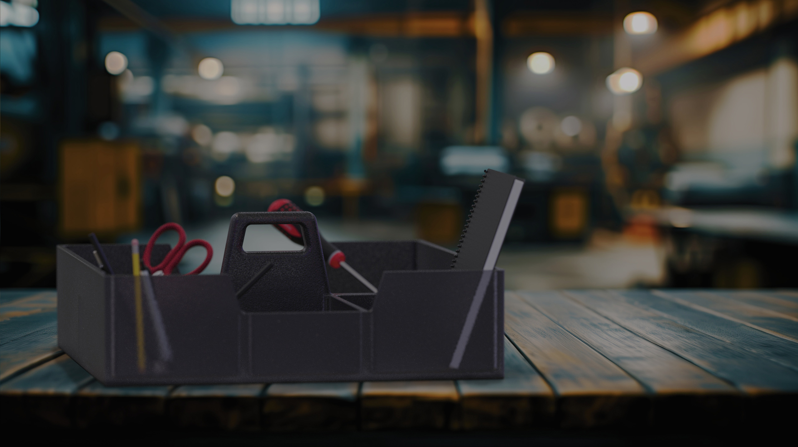
Removed and carried — the organizer functions independently on any surface
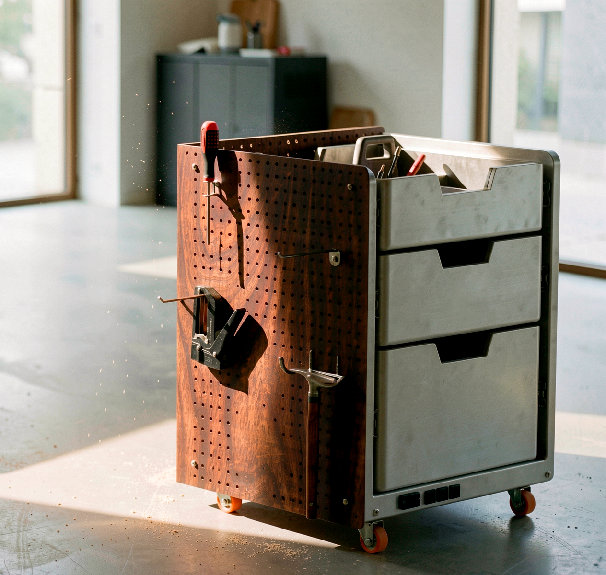
In context — workshop-ready and tradeshow-credible
Designing for tradeshow context forced me to think about the object from two perspectives at once: as a storage tool someone uses every day, and as a product someone buys on a show floor.
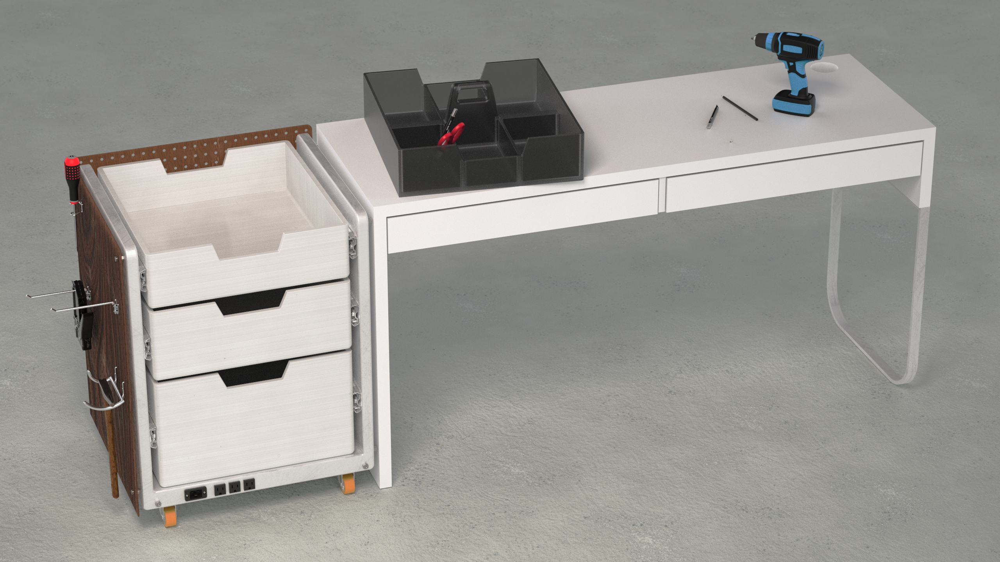
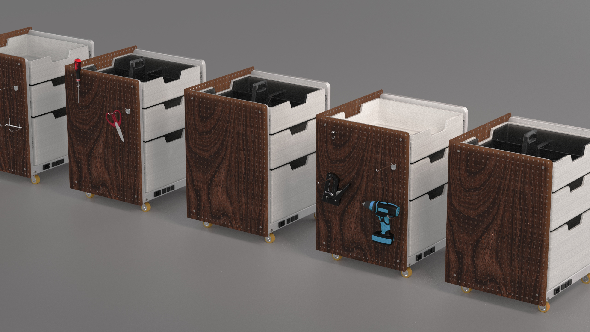
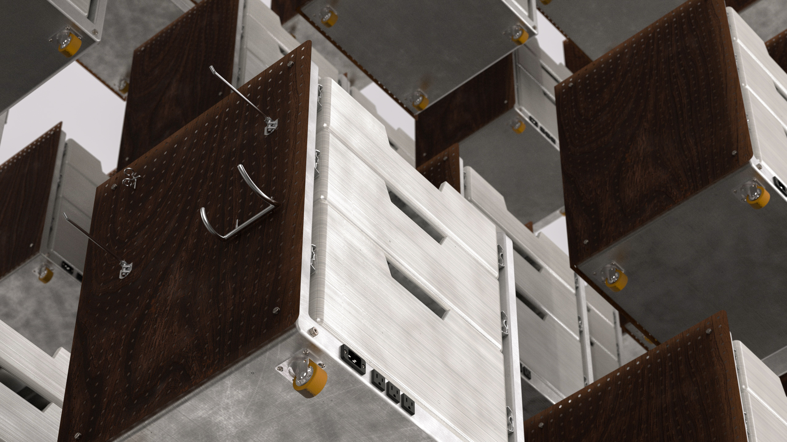
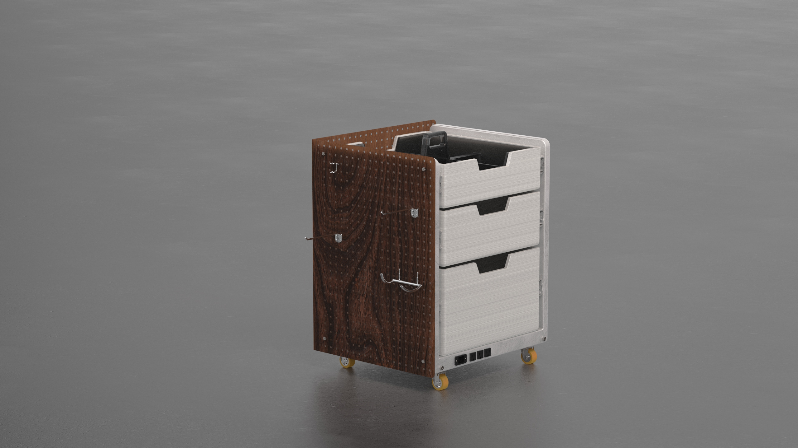
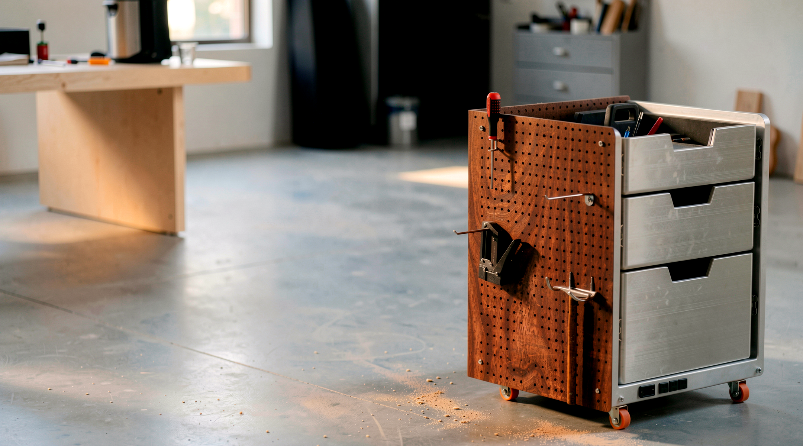